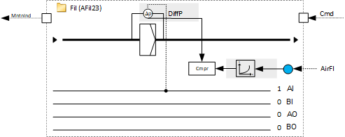

[AFil23] Air filter, with differential pressure sensor and maintenance indication
Program block, name / node subtype: [AFil23] Air filter, with differential pressure sensor and maintenance indication
Library hierarchy: Ventilation and air conditioning equipment
Family: Fil
Project tree | Diagram |
|---|---|
|
|  |

Configurator


Program blocks are stored in the library without I/Os. Use the auto-create and auto-connect functions to create I/Os and/or to connect them to the interface blocks, e.g., R_A, CMD_B. Alternatively, take the I/Os from the folder containing the predefined I/Os in the library and/or from the plant and connect them to the interface blocks.
Function
Monitors an air filter with a differential pressure sensor.
The characteristic of the filter element (differential pressure across the clean filter element for a given air volume flow) is set in the program (function block of type CHAR). This characteristic should be available in the filter manufacturer's documentation. Normally, the monoblock contains several filter elements. Their number must be set in the program. The measured air flow in the supply or extract air is divided by the number of filter elements and the resulting air flow per filter element is used for the function block CHAR.
The differential pressure across the filter is compared to the differential pressure for clean filter for the current air flow (from the function block CHAR). A maintenance indication is generated if the differential pressure reaches one of the limits calculated in the following way:
- Differential pressure for clean filter for the current air flow plus an offset (e.g., + 100 Pa)
- Differential pressure for clean filter for the current air flow multiplied by a factor (e.g., 3)
Mandatory elements
Name | Description | Type | Alarm / Notification class | Trend / Type |
|---|---|---|---|---|
|
DiffP | Differential pressure | AI: Analog input | No | Yes, 2 |
MntnLmFac | Maintenance limit factor | ACnfVal: Analog configuration value | No | No |
MntnLmOfs | Maintenance limit offset | ACnfVal: Analog configuration value | No | No |
PrMntnLm | Present maintenance limit | ACalcVal: Analog calculated value | No | No |
MntnInd | Maintenance indication | BCalcVal: Binary calculated value | Yes, 8 | No |
Set the number of filter elements in the Programming editor accordingly.